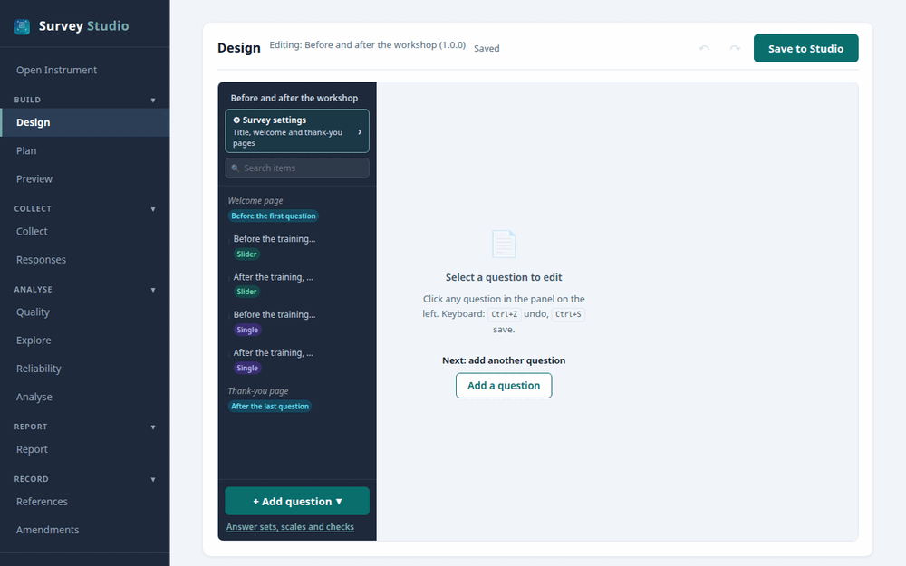
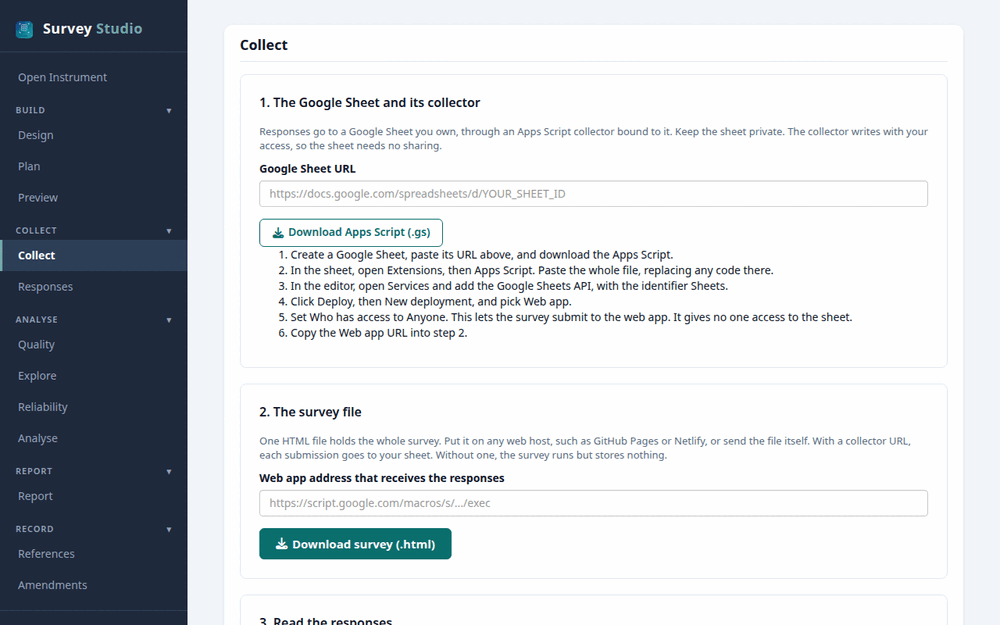
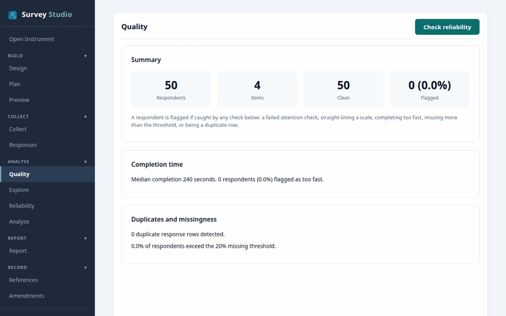
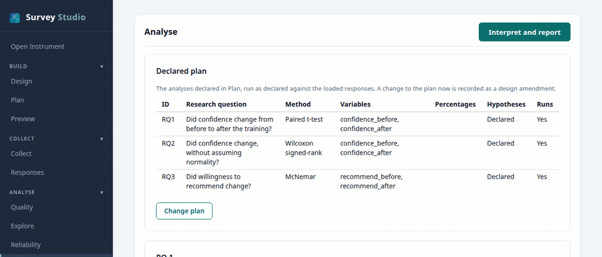
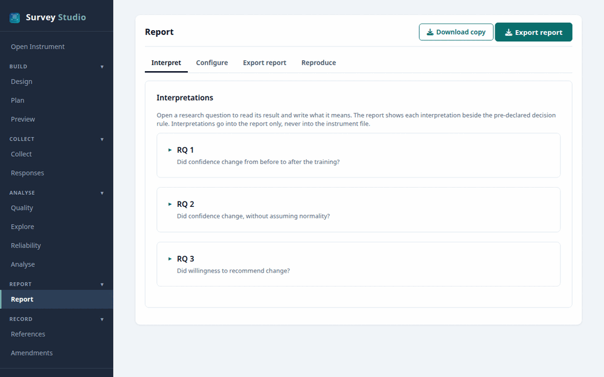

Run a study in SurveyStudio
Source:vignettes/run-a-study-in-surveystudio.Rmd
run-a-study-in-surveystudio.RmdSurveyStudio takes a study through 5 stages without any code: design
the questionnaire and its analysis plan, collect the answers, check
them, run the planned analyses, and write the report. Everything you
make is saved in 1 .sframe file.
The screenshots show the training evaluation template, measured before and after the training. Its answers are demonstration data, not collected from participants, and every output made from them says so.
Open SurveyStudio
- Install R, RStudio and surveyframe, as the Get started page shows.
- In RStudio, open the Addins menu and choose surveyframe: Try a demo.
- Pick paired to follow this page, or any template that is close to your own study.
To work on a study of your own, choose Open
Instrument in SurveyStudio’s left menu and select your
.sframe file.
1. Design

The Design screen holds the questions, the answer options, the welcome and thank-you pages, and the study the questionnaire serves. Choose Plan in the left menu to write the analysis plan: each research question with its hypotheses, the method, the variables and the decision rule.
When you finish, press Save to Studio.
Plan complete? Go to the Report screen and press Export pre-analysis plan. It writes a document, as HTML, PDF or Word, that you can submit to OSF, Zenodo or your ethics committee before you collect any answers.
2. Collect

The Collect screen downloads your survey as 1 web page that respondents open in any browser. To store each answer in a Google Sheet, it also gives you the Apps Script collector, with step-by-step instructions.
3. Check

When the answers arrive, load them on the Responses screen. The Quality screen then shows who failed an attention check, who answered too fast, who gave the same answer to every item of a scale, and how much is missing.
4. Analyse

The Analyse screen runs your plan exactly as you declared it. If you change the plan after the answers arrive, SurveyStudio records the change as an amendment, so readers can see what changed and when.
5. Report

The Report screen lets you write an interpretation for each result. It is printed beside the decision rule you declared before the results. Then press Export report for an APA 7 report in HTML, Word, PDF or OpenDocument.
The report names your questionnaire’s hash, so a reader can check at surveyframe.org/verify that the questionnaire analysed is the one you planned.
Prefer to write code?
Every stage above can also be run in R, on the same
.sframe file. See Run a
study in R.